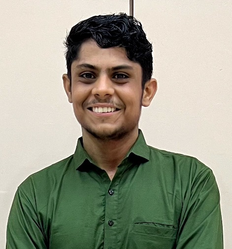

|  |
Mohit Kumar | News | Education | Experience | Projects | |
|
I am a final-year undergraduate student at Indian Institute of Technology (IIT) Guwahati where I'm majoring in Computer Science and Engineering. I am specifically interested in Entrepreneurship and Algorithms. I am also a recepient of the Shraman and HDFC Scholarship. I interned at WinZO Games this summer as a Software Engineer Intern, where I developed a new Service for Super Star Deals used by the WinZO Marketing Team to manage their deals 0.1M+ deals with over 75,000 superstars(micro-influencers). In the process, I had an amazing experience with TypeScript, Node.js, PostgreSQL, TypeORM, New Relic, and Jenkins. I also developed a summary page for users to see summary of their games played and transctions. I am doing my undergraduate thesis under the joint supervision of Dr. Sanasam Ranbir Singh and Prof Sukumar Nandi in the Text Summarisation in Indian Languages. We are working on accurate text summarisation for Indian Languages with less resources and we will be working on developing a Large Language Model(LLM) in the upcoming semester. Previously, I did a Research Internship with Dr Ahmad Al-Mallahi under the joint collaboration of MITACS and the Indian Government, particularly in the field of Deep Learning and Agriculture. I look forward to interacting with people and participating in team activites. In my leisure time, I pursue sports, Competitive Programming, and I am an avid YouTube consumer as well :p Please feel free to check out my resume and drop me an email if you want to chat with me! |
|
July '24 |
Began my undergraduate thesis project with Prof Ranbir Singh and Prof Sukumar Nandi at OINST Lab, IIT Guwahati. |
|
May '24 |
I was offered the position for Overall Placement Coordinator for our Batch of 2025. |
|
May '24 |
Started my summer internship at WinZO Games as a Software Development Engineer Intern. |
|
Feb '24 |
Led a team of 8 and won the Silver Medal in Research Paper Labeller Event of Inter Hostel Tech Meet 2023 |
|
Aug '23 |
Became the Associate Placement Coordinator at CCD IIT Guwahati for the Placements of 2024 Batch. |
|
Aug '23 |
Received a Software Development Engineer internship offer from WinZO Games for the Summer of 2024! |
|
July '23 |
Receiveda $15,000 grant by Canadian Government to pursue Master's in Canada |
|
May '23 |
Started working as Research Intern with Dr Ahmed Al-Mallahi (Dalhousie University Canada) |
|
Feb '23 |
Won the Gold Medal in Stock Price Predictor Event of Inter Hostel Tech Meet 2023 |
|
Jan '23 |
Took up charge as the Captain of Kabaddi Team of Manas Hostel in Spardha and |
|
Dec '22 |
Received the prestigious MITACS Research Internship in Canada at Dalhousie University |
|
Sept '22 |
Received the HDFC Foundation Scholarship 2021-22. |
|
Sept '22 |
Received the Shraman Foundation Scholarship 2021-22 among 20 undergraduates all over India |
|
Aug '22 |
Won the Independence Day Cross-Country among 200+ runners. |
|
March '22 |
Won the Beat the Secretary Event organised by Athletics Club by running 100+ km in a week. |
|
Nov '21 |
Started studying B. Tech in Computer Science and Engineering at IIT Guwahati! |
|
|
Nov '21 - May '25 (expected) CGPA: 8.55/10.00 After 6th Semester Positions of Responsiblity:
|
|
|
May '24 - Jul '24
Team: User-Service (Back-End)
|
|
|
Jul '24 - Present
Advisors: Dr. Sansam Ranbir and
Dr. Sukumar Nandi
|
|
|
May '23 - July '23
Advisor: Dr. Ahmad Al-Mallahi
|
|
|
Aug '23 - May '24
|

.png)

{kind=link}